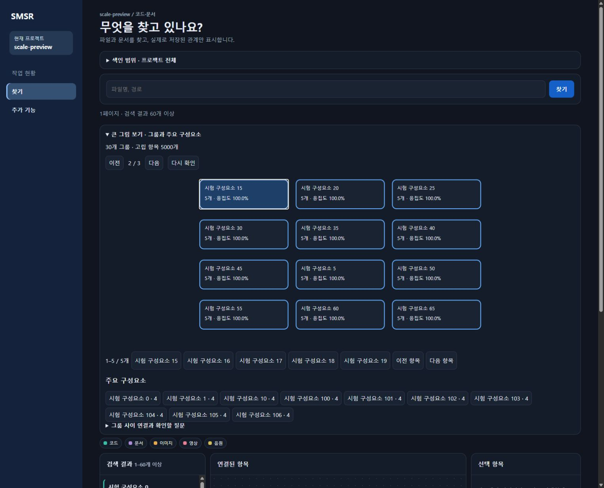
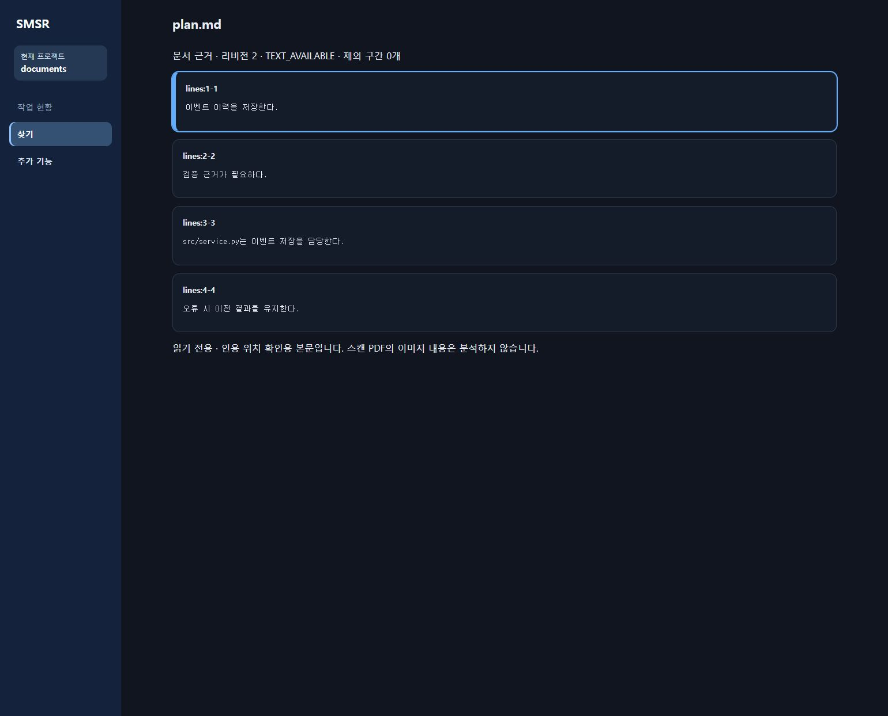

2026-10-01 · 전체 9페이즈 계획 · 이전 F0·F1 운영 배포 기록
아래는 이전 요청의 결과를 보존한 기록입니다. 이후 F4·F5-5·F6-3·4·6·F7·F8 소스 구현·시험과 남은 운영 인수는 최신 결과를 보세요. 아래 미구현/미설치 표기는 당시 상태입니다.
전체 14개 기능 완료가 아닙니다. 이번 결과는 F2, F3 호스트 제출 경로, F5-1~4, F6-1·2·5입니다. 소스와 별도 시험 앱에서 검증했으며 현재 실행 중인 127.0.0.1:49783 앱·운영 DB·Codex 전역 설정은 교체하지 않았습니다. 시험 출력은 src/SMSR.App/bin/GraphifyNext26입니다.
| 구간 | 구현·검증 결과 | 한계 |
|---|---|---|
| F2 추출기·언어·색인 | Graphify 0.9.73 / ef4450d9c28acb2b8cdc22d369c1777b77148eef 고정. 원본 58모듈 무수정 해시·라이선스 검사. 103 코드 확장자 목록, 시험 환경 101확장자 추출기 가용성. 기존 16문법과 추가 26형식의 구조를 원본과 대조. 10,001파일 교차 호출, 전체/증분의 추가·수정·삭제·이름 변경·미해소·별칭·partial·설정 변경 검사. | 확장자 수는 언어 수/정확도가 아님. DM/DME는 파일만 색인. 전 언어 컴파일러 의미 판정·실행 순서 보장 아님. 추가 문법·PDF 의존성은 시험 overlay에만 설치. |
| F3 문서·의미 | PDF 텍스트 페이지, DOCX 문단/표, XLSX 시트/셀·캐시 수식 값을 위치와 함께 읽음. Markdown/TXT/HTML은 줄/본문 근거 제공. 호스트 제출의 개념·요구사항·설계 이유·코드 참조·여러 참여자 그룹을 해시/인용/존재 대상/버전으로 검증해 원자 저장. 문서 필터·색상·원문 인용 강조 연결. | 기본 파일 색인이 모든 문서의 모델 분석까지 자동 수행하지 않음. 무인 provider 호출 미구현·미승인. 스캔 PDF OCR은 F4. 전체 원문은 저장하지 않지만 짧은 검증 인용은 근거로 저장. |
| F3 최신성·보존 | 소유 문서와 참조 코드 지문·모델·계약 버전·리비전 추적. 실시간 원문 변경/삭제·동명·캐시 재사용·모델 변경·삭제 후 복원 검사. 무관한 재색인은 유효 사실을 보존. 실패 제출 롤백, 과거 리비전/심층 출처 유지. | 모델/토큰 미제공은 unknown/null. 이름이나 의미 유사성만으로 호출을 확정하지 않음. 추론은 후보이며 재분석 필요 상태를 숨기지 않음. |
| F5-1~4 큰 그림 | 고정 원본 cluster/cohesion/god_nodes 재사용. 그룹 이름·응집도·대표·핵심 구성요소·그룹 간 연결과 선정 이유/검증 질문. 그룹→실제 항목→기존 관계/원문 탐색. 5,000노드 초과 자동 펼침, 페이지·초기화·키보드 Enter/Space. 리비전 캐시와 bounded 백그라운드 MCP 분석. | 시험 환경은 원본 NetworkX Louvain fallback(seed 42). 그룹 이름은 결정적 대표 라벨이며 LLM 설명이 아님. 추론 관계는 그룹 확정 근거에서 제외. F5-5 구조 보고서 미구현. |
| F6-1·2·5 질문·스킬 | 실제 어휘 기반 후보·동명/없음 구분, 방향·종류·깊이·추론 선택과 리비전 고정 근거 묶음. 프로젝트 .agents/skills/smsr-query validator 및 실제 MCP 게이트웨이 호출. 유용/오류/교정/실패 경로 교훈을 다음 탐색에서 재사용. 관계 사실은 변경하지 않음. | 원문 질문 로그 없음. 예산은 UTF-8 바이트 기반 보수 추정이며 tokenizer 실측 아님. 근거 묶음은 색인 스냅샷; 실제 파일 최신성은 원문 확인 필요. 설명/영향/보고서 전용 스킬과 통합 인수는 남음. |
read_graph_document → 호스트가 인용 위치를 포함해 추출 → submit_graph_document_semantics → get_graph_document_semantics. 제출 도구는 request 객체 계약을 사용합니다.get_graph_overview는 최초 ANALYSIS_PENDING과 재조회 간격, 완료 READY, 실패 FAILED를 반환합니다. 실패를 완료로 표시하지 않습니다.get_graph_vocabulary → search_graph_question → get_graph_question_evidence → 근거 있는 답변. get_graph_feedback_lessons의 교정을 적용하되 실제 그래프 사실을 덮어쓰지 않습니다.운영 DB가 아닌 격리 DB 결과입니다. SMSR은 변경 중인 작업 디렉터리 대신 고정 사본을 사용했습니다. 80질의·동시 8 기준이며 이후 코드/데이터 변경과 PC 상태에 따라 달라집니다.
| 항목 | AO3.5_Main | SMSR 고정 사본 |
|---|---|---|
| 파일 / 노드 / 관계 | 2,603 / 31,399 / 66,341 | 1,068 / 6,277 / 18,512 |
| 질의 p95 / 최대 | 714.42 / 775.12ms | 232.77 / 321.93ms |
| 읽기 전용 Cypher | 1,765.82ms | 793.84ms |
| 본문 200파일 cold / warm | 13,255.78 / 3,898.82ms | 11,542.42 / 4,000.36ms |
| 호스트 peak bytes | 486,973,440 | 289,210,368 |
호스트 peak는 Python 자식 메모리를 제외합니다. 본문 원문 DB 미저장과 무변경 재색인을 확인했습니다. 관계 수는 파일 요약·추출 후보도 포함하며 실제 실행 횟수나 완전성 수치가 아닙니다. AO3 측정 JSON · SMSR 측정 JSON.
별도 50,000노드·200,000관계 실제 C# 작업기 경로는 371.98초, 입력 32,738,957바이트, 1,670그룹으로 완료했습니다. 프로세스 제한 1 GiB는 peak 실측이 아닙니다. 대형 작업기 측정 JSON.


대형 Cypher 응답이 원문 메타까지 투영해 전달 한도를 넘던 문제는 사용 열만 조회하도록 수정했습니다. 변경 중인 SMSR의 원문 지문 불일치는 보호 규칙을 해제하지 않고 고정 사본으로 재검증했습니다. 확장 후 .csproj가 지원 코드로 분류돼 심층 설정 변경을 놓치던 회귀는 공통 설정 파일 판정으로 수정하고 정적/심층/지식/추적 회귀를 통과했습니다. PDF·삭제·HTTP 검사의 실패는 원인과 수정 후 결과를 구분했고 실패를 PASS로 집계하지 않았습니다.
| 남은 구간 | 다음 작업 |
|---|---|
| F4 | 이미지/OCR·스캔 PDF, 음원 전사, 영상 장면·시간 근거, 미디어 의미 연결. 모델 다운로드·외부 전송·보관·예산 결정이 필요한 경로는 별도 승인 후 진행. |
| F5-5 | 동일 리비전 구조·지식 보고서 생성. |
| F6-3·4·6 | 설명·영향·유지관리·보고서 스킬과 새 세션 실사용 통합 인수. |
| F7 | 변경 감시·갱신 큐·복구, 스킬 배포/업데이트·훅 상태. 전역 설정은 미적용 원칙 유지. |
| F8 | 전체 통합 찾기·미디어 근거, 독립 HTML/SVG/GraphML/Wiki/Obsidian, 전체 회귀·성능·운영 인수와 승인된 배포. |
전용 그래프 DB 교체·원문 질문 로그·컴파일러 수준 전 언어 정확도·정밀 taint/PDG·자동 공개 게시를 이번 변경에 추가하지 않았습니다. Git 커밋·푸시·릴리즈와 운영 앱 교체도 미수행입니다. 상세 실행/변경 파일/위험은 날짜별 개발 이력에 기록합니다.